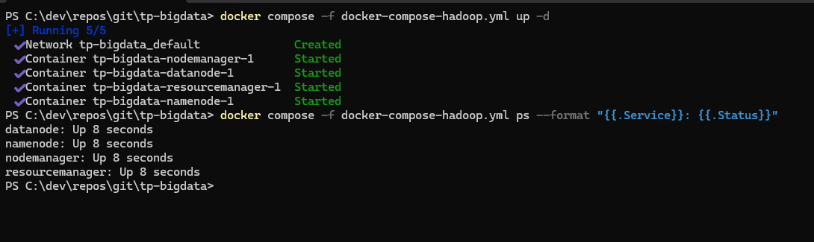
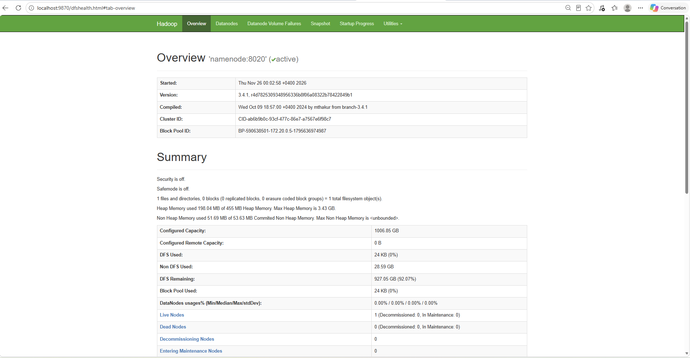
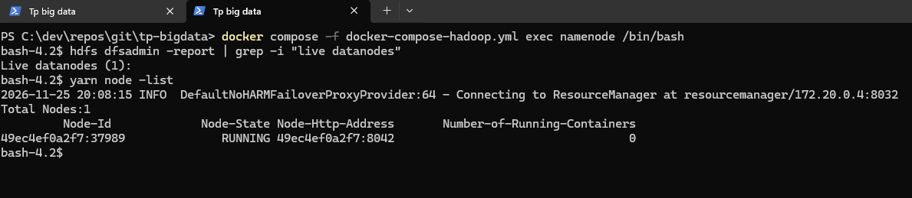
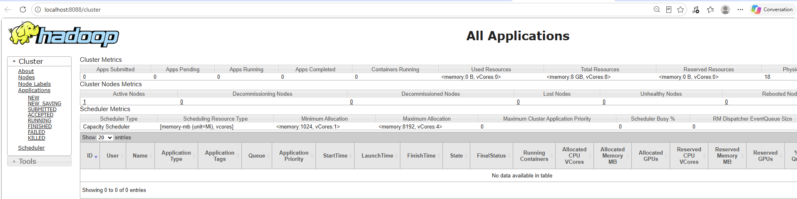
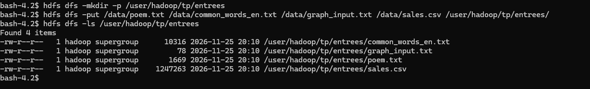
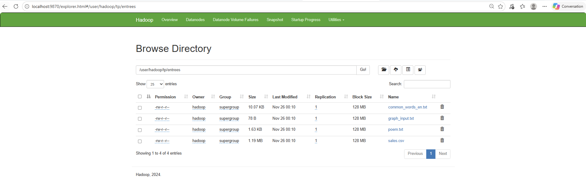
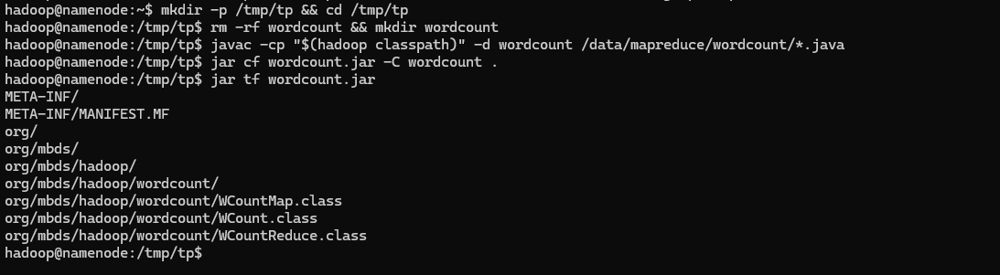
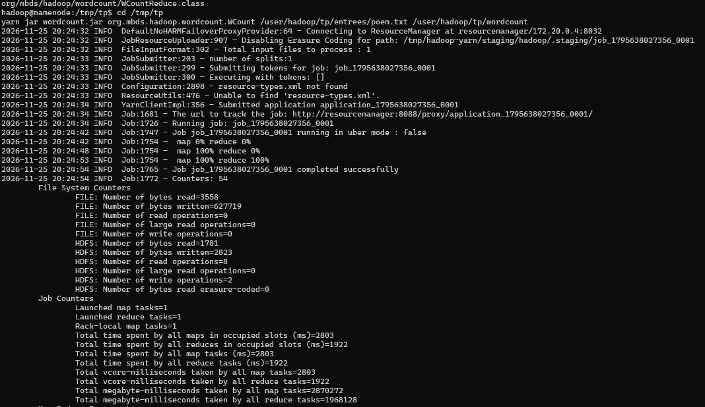
Map-Reduce Framework
Map input records=64
Map output records=314
Map output bytes=2924
Map output materialized bytes=3558
Input split bytes=112
Combine input records=0
Combine output records=0
Reduce input groups=139
Reduce shuffle bytes=3558
Reduce input records=314
Reduce output records=139
Spilled Records=628
Shuffled Maps =1
Failed Shuffles=0
Merged Map outputs=1
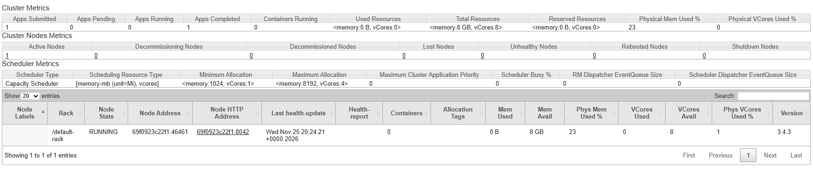
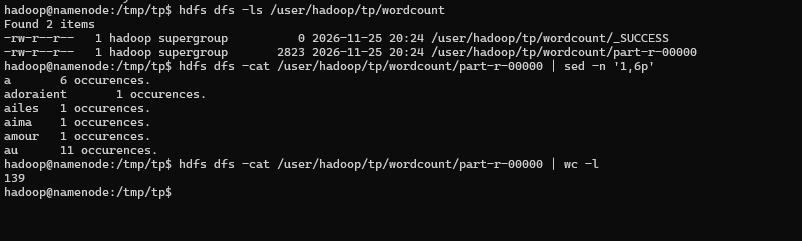
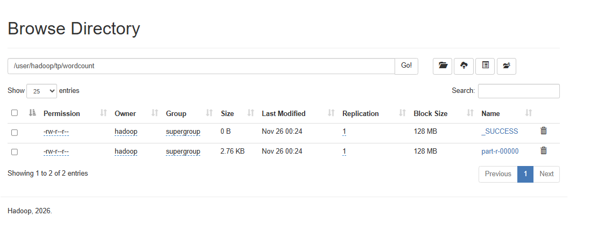